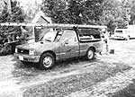
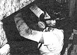
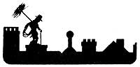
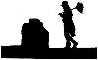
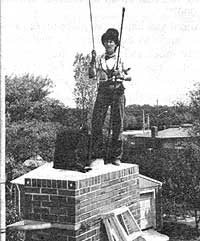

The story behind a low-investment bootstrap business.
I'm sure most of you have seen the advertisements (in MOTHER and elsewhere) extolling the many benefits of becoming a chimney sweep. [EDITOR'S NOTE: Longtime readers of this magazine may also recall our article on the subject, which appeared in issue 49.] Well, all of the claims-the high income, the plentiful vacation time, the freedom to be your own boss and to set your own hours while you perform a useful service-can be true. It really is possible to write your own ticket to success and happiness as a sweep. As the editor and publisher of sweepdom's only independent trade journal, SNEWS, The Chimney Sweep News, I can personally attest to the rewarding careers of many "soot scrubbers".
But I also know that sweeping, like any business, has its pitfalls, too. The ads, for example, don't mention the parts about the job being terribly dirty and demanding . . . about freezing your tail off in the dead of winter (and baking on a hot roof during the summer) . . . about the long hours spent on bookkeeping chores and phone calls . . . or about getting bitten by a raccoon holed up in a smoke chamber with her offspring. You can spend hours scrunched in a fireplace, trying to remove and replace a rusted damper . . . there's always the risk of falling off a client's roof . . . and you may face some definitely lean times during the off-season. And as far as "freedom" goes . . . remember, that's a relative term. You may be your own boss, but your customers are your living. So when that emergency call rings in, you grab your brushes and go, whether it's convenient or not!
Still, as one sweep friend of mine put it, "You don't punch a time clock. You share pots of coffee in cozy kitchens with friendly folks you never would have met otherwise. Plus, you see the world from an entirely new perspective, and there's always that anticipation as to what the day will bring."
And yes, you can make very good money. But the field has become highly competitive these days, so only the fittest-those with the most know-how, business sense, and motivation-survive. According to one estimate, there were only a few hundred sweeps in this country in 1977 . . . today, there may be as many as 8,000 working part or full-time. A lot of people are jumping onto the bandwagon . . . and many of them are falling off-disillusioned and out of money-a few short months or years later.
"But it doesn't have to be that way," says former college professor and onetime chimney cleaner "Sooty" Bob Daniels, who is now a sweep-equipment wholesale supplier, as well as an instructor in business-building and advanced techniques at chimney-sweep conventions and schools. "If you look at almost any kind of small business in America," he says, "you'll find more failures than successes. But it's the other way around when it comes to sweeping. There are many more successes than failures."
WHY DO SOME SWEEPS FAIL?
Harry Richart of Hasbrouck Heights, New Jersey started cleaning flues 25 years ago. Today, he's president of the National Chimney Sweep Guild (NCSG)-the industry's major national trade organization-and, with his son, he operates a very successful business in New York City and its suburbs, extending into parts of Connecticut, New Jersey, and Pennsylvania.
Every year, Harry watches another four or five sweeps in his locale go out of business. And he can recite a whole list of possible reasons why they go under: They're not willing to work a large enough geographic area . . . they don't diversify . . . they invest too much money in equipment . . . they're not prepared for the long slack season . . . they waste money on ill-advised or ill-timed advertising . . . and/or they start out with too little capital in reserve to carry them through periods of low cash flow.
"Plus," says Harry, "a lot of these people just aren't trained or prepared for what they discover they actually have to do on the job. In addition to knowing how to clean stoves and flues, you need at least some knowledge of thermodynamics, along with good common sense and mechanical ability. You'll constantly run into situations that aren't covered in any manual, so you have to be able to innovate."
HAZARDS
Another part of the business that newcomers often overlook is the fact that the job carries with it a number of very real dangers.
Sweeps have been electrocuted or severely injured when their steel brushes or aluminum ladders touched power lines. Steep or icy roofs present obvious hazards (smart operators, in fact, always use safety ropes or a ladder with a ridge hook under such conditions). Less dangerous but still risky aspects of the work include lifting, bending, and climbing. A number of individuals have been forced to give up the trade because of chronic and debilitating strains and sprains. The wrists, hands, and back are especially susceptible to such injuries (female sweeps seem to be particularly vulnerable to these problems).
Also, creosote-a substance with which sweeps come into contact every day-contains known carcinogens . . . and the arsenic compounds that are released and deposited when wood burns are harmful, too. A recent study of 2,495 chimney sweeps by the National Board of Occupational Safety and Health in Sweden revealed that the rate of cancer of the esophagus, liver, and lungs was three to five times greater for those people than for individuals employed in other lines of work.
For your own health, you must take precautions to protect your skin and lungs if you work as a sweep. Gloves, a respirator, protective skin creams, and strong cleaning compounds capable of removing every trace of soot and grime from your body are all essential. If you smoke, you'll have to give it up unless you want to compound your occupational hazards with a dangerous personal habit. And if you have a beard, you probably should shave it off, since a respirator will not fit snug over your whiskers, and without a tight seal you'll surely breathe in poisons.
ON THE OTHER HAND
. . . Despite the hard work and the risks involved, most successful sweeps-including "Sooty" Bob Daniels-believe that they've found the best bootstrap business of them all. "With hard work, study, and lots of energy," says Daniels, "a new sweep can still make $25,000 to $50,000 annually within one to four years. What other business can bring you that on an investment of roughly $2,000?"
And if you happen to place more value on free time than on money . . . well, you can pretty much tailor your enterprise to give you that, too (except in the fall of the year, when you're apt to meet yourself coming and going on the rooftop).
Recently, I talked with one sweeping couple who devote most of their time to running an aggressive flue-cleaning operation in an East Coast urban area. They've been in business for four years now, and-with the help of hired crews-net between $70,000 and $80,000 a year.
On the other end of the spectrum, there's the 50-year-old sweep from rural Vermont who's content with the $8,000 that his one-man operation brings in during the fall and winter. "After the autumn rush and all those miserable emergency calls in the middle of snowstorms," he says, "I'm sick of sweeping by the time April rolls around. So I spend the spring and summer getting my firewood in, fishing, and gardening. When the leaves start changing color again, I'm ready to pick up my brushes and start all over."
Everyone, it seems, has his or her definition of "success" in the sweep business. A Long Island, New York entrepreneur, for instance, worked hard for five years and then simply retired on his earnings. And a California sweep followed a dream that many of us have had: He labored several years to build a good business, then sold the enterprise, bought an expensive sailboat, and headed for the South Pacific.
KNOW THYSELF
If you're thinking about becoming a sweep, you'll need to sit down and give some serious thought to what you want out of the job. And perhaps even more important, you should objectively appraise your ability to achieve that goal, given the realities of the business and your local market (does your area need another sweep?).
There are several factors in particular that you'll want to consider:
Motivation and commitment. Obviously, no business succeeds overnight, nor is there such a thing as a trouble-free enterprise. Be honest with yourself: Are you really willing to invest the time, money, and energy-and to undergo the physical and mental stress-involved in establishing yourself over the next several years?
Physical condition. There's no way around it: You absolutely must be in good physical shape. Many sweeps exercise regularly to build and maintain the flexibility and strength their job demands. (If you have a bad back, forget about sweeping.)
Financial capability. Although only a relatively small investment is required in this business, you will need enough money to pay for your equipment and to cover overhead expenses. Don't rely solely on the income you'll earn from sweeping to pay your personal and business bills . . . it'll take time to establish a self-supporting, profitable enterprise. In fact, virtually every successful sweep I've met has started out small, cleaning chimneys part-time and holding down a second job of some kind to provide funds for living and business costs over the first few years.
You'll need to buy quality equipment, but Harry Richart cautions against spending too much money on it. He says you should be able to get your brushes, scrapers, ladders, a top-of-the-line respirator, and a good industrial vacuum cleaner (widely available for $400 or less) for a total of $1,000 to $1,500. In addition, a truck or van is usually considered a necessity, although I know a few sweeps who work out of a compact car or a station wagon.
Using your home for an office (as most sweeps do) will save you some money, but you'll still have to cope with a number of expenses that quickly add up, such as advertising in the Yellow Pages and elsewhere . . . truck or van payments . . . vehicle maintenance and fuel . . . liability insurance (don't work without it!) . . . office equipment and supplies . . . license fees . . . phone-answering services or machinery . . . clerical or assistants' salaries . . . baby-sitting . . . membership dues and workshop tuition . . . and any number of other miscellaneous costs.
Figure, too, on paying a certified public accountant to help you prepare your tax returns and set up an efficient bookkeeping system. A CPA's services may be expensive, but they'll almost always save you money in the long run.
KNOW THY TRADE
Of course, if you set yourself up as a sweep, you have a responsibility to your customers to provide professional, reliable, and safe service and advice right from the start. This is not a learn-as-you-go trade. If you don't know what you're doing, your business will last only long enough to tarnish your reputation and that of the industry as a whole. So you should be sure to do the following:
Get training before you hire out.
Since at the present time almost anyone can masquerade as a chimney sweep, the future may bring federal regulations that establish industry standards and require training and licensing procedures for sweeps. Most of us would rather see newcomers impose standards of excellence on themselves without the need for such intervention.
There are a number of very good ways to acquire the necessary skills of the trade prior to actually setting yourself up in your own business . . . and by doing so, you'll give yourself a much better chance of competing successfully once you do enter the marketplace.
[1] Embark on a do-it-yourself training program until you feel competent to "turn pro". (One female sweep I know practiced on her own flue and those of her friends-with a brush in one hand and an August West training manual in the other-for several months before opening her business.)
[2] Apprentice yourself to an experienced sweep. You probably won't make much money-if any-during this time, but the experience will be invaluable.
[3] Hire on with a company that trains its own sweeps.
[4] Attend a special chimney-sweep training school (see the sidebar "Training and Certification Programs").
Participate in industry workshops, seminars, and other programs.
To further your education as a sweep, make it a point to take advantage of the many ongoing programs sponsored by various businesses and trade organizations. Many sweeps have told me that just one good seminar or workshop is worth a year in the field when it comes to improving technical skills, business savvy, and morale . . . so don't miss such opportunities!
One good source for such "continuing education" is the National Chimney Sweep Guild. Formed in 1977, this organization works to promote the industry, educate solid-fuel users, and upgrade the skills of American chimney sweeps. The NCSG makes available to members and nonmembers alike an excellent certification program . . . an annual convention at which many workshops are conducted . . . and technical advice by phone. It also offers its members liability and medical insurance at group rates.
Of course, a lot of people get into the trade by buying "package" systems-which include educational materials as well as equipment-from August West or Black Magic (both companies are listed in the sidebar "Training and Certification Programs"). These two firms make most of their profit on sales of initial packages, yet both make good follow-up efforts to see to it that "their" sweeps succeed. Black Magic holds an annual advanced seminar at its headquarters in Stowe, Vermont and conducts regional sessions from time to time. And August West sponsors workshops (for its customers only) all across the country. In fact, no matter where you live in the U.S., during the past year there was at least one August West seminar within a day's drive from you.
Finally, three North Carolina soot scrubbers are also holding a series of "Sweep's View" weekend workshops throughout the country this year. Call Cindy Tomain, Brenda Sanders, or Pete Luter at 7041 2431209 for more information . . . or check for their listing in SNEWS.
Read everything you can about your trade. Build up a reference library on chimney and fireplace construction, firewood, and related subjects. Learn the local, state, and national fire codes that apply to chimney and stove installations. And subscribe to as many solid-fuel trade journals (Wood 'n Energy, Alternative Energy Retailer, National Energy journal, and SNEWS, The Chimney Sweep News) as you can. The National Chimney Sweep Guild publishes SWEEPING every month for its members. And both August West and Black Magic mail useful newsletters to those who train under them or purchase their equipment.
SOME SECRETS TO SUCCESS
Diversify. Most sweeps today agree that the major opportunity for success-and a key to survival during the off-season-lies in offering a wide variety of services.
"You may work 12 to 15 hours a day during the busy season and make goad money," says "Sooty" Bob Daniels, "but if you don't do more than just swab flues, you can starve during the rest of the year."
As a result of that situation, America's sweeps are evolving into virtual solid-fuel technicians! In addition to cleaning chimneys, many are now offering their services as masons, sheet metal workers, flue refiners, stove installers, safety inspectors, energy-efficiency consultants, and all-around troubleshooters. Moreover, a number of sweeps sell stove accessories and the like.
Get a partner or an assistant. Although a lot of sweeps run perfectly successful operations on their own, you should at least consider getting some help . . . particularly if your business is full-time or covers a large territory.
Harry Richart thinks sweeping definitely works best as a two-person (or more) enterprise. "You can give better service, and you have more time to talk to your customers, explain things, and sell them other services and accessories," he says.
And remember that sweeping is one of the best husband-and-wife bootstrap businesses in the country.
Make yourself "visible". Few sweeps who are just starting out can afford much advertising . . . but the very nature of the trade-the tradition, the old-limey top hat and tails, and the long-established mystique behind chimney sweeps-makes it fairly easy to get free publicity and word-of-mouth promotion. When Anthony Bierly of Winona, Minnesota, for example, goes into a new area to offer his skills, he heads straight for the local newspaper office . . . and there's usually a story about him in the next edition.
There are other enterprising ways to become known, too. Set up a booth at your county fair. Get to know the community's fire department personnel. Wear your top hat and tails in local parades. And once you feel secure in your knowledge of the subject (and in your ability to communicate that know-how), offer to speak to school classes and community groups about fire safety.
THE FUTURE
There's no doubt that this business has seen a lot of changes since those first heady years in the late 70's when becoming a sweep was both a novel idea and-seemingly-a wonderfully easy way to make money. The past several years have taught us to be more realistic and have sharpened our skills, widened our range of services, and strengthened the industry as a whole. Indeed, chimney sweeps are fast becoming an important symbol for home fire safety.
Some sweeps do have doubts about the future of the trade, though.
"As the stoves get better, combining elements of the Russian fireplace with catalytic combustors, there'll be less soot to sweep," says Neal Singer of Albuquerque, New Mexico. "The burn will be cleaner. Simpler methods of cleaning will be developed, too . . . perhaps a chemical that really works-at long last!-or a simple built-in mechanical device."
Will those inevitable developments spell the end of the top-hatted, free-wheeling, heel-clicking sweep in this country?
Well, opinions vary, of course . . . but the consensus seems to be that-although the market for sweeps may eventually stop expanding -the trade itself will probably just adapt to the changes. One thing's for sure, people still light up when they see a top-hatted soot scrubber. And I, for one, believe that anyone who masters the skills and business savvy of a modern-day sweep-turned-technician and combines them with the fun and pizzazz of the traditional tuxedoed chimney dancer is likely to reap a very rewarding future.
Sweep's luck to you all!
A "SOOTABLE" TRADE FOR WOMEN
It's an unfortunate fact that many women who work hard to learn and enter the labor trades encounter persistent prejudice and outright harassment from many of their male counterparts. Female sweeps, however, rarely catch any flak from their co-workers, employers, or customers.
In fact, the industry already proudly claims several hundred female members who are working without the hassles that they'd be likely to encounter in blue-collar trades dominated by men.
Joni Panciera, a former kindergarten teacher who now runs her own highly successful three-year-old sweep company, says, "Women who are sweeps have it made compared with those who are pipe fitters, firefighters, and the like." When Joni attended the first national Women in the Trades Conference in Oakland, California last May, she was appalled by the seemingly endless stories of other participants . . . accounts of sexual harassment, physical abuse, intentionally unsafe or inadequate training procedures, ridiculously long "apprenticeships"; and more.
Linda Strohacker, who signed on with Magic Sweep Chimney Sweeps in Virginia Beach, Virginia last summer, is another woman sold on the occupation. An experienced electrician, she'd been out of work for five months (and, as a union member, couldn't solicit her own jobs), so she decided to try sweeping . . . and during one blistering hot summer sailed through a rigorous apprenticeship with flying colors.
Like Joni, she stays tough and strong by working out at her local spa. "When I started sweeping, " says Linda, "1 was already used to climbing ladders and carrying heavy equipment. My wrists were strong.
But I did get stiff and sore from sitting cross-legged on hearths, and my right hand hurt after a long day's work. I'm building up my stamina now so that I don't come home dragging anymore. I have my good days and my bad days, but I like it. "
Several women have become leaders in the industry. Eva Horton, a woodstove dealer in Maine, was a prime organizer and the first president of the National Chimney Sweep Guild. Elaine Edwards is executive director of the NCSG . . . former sweep Sue Fine is the guild's communications director . . . and Dee Stoll heads the Chimney Sweep School of America.
"Sweeping is still in its infancy in this country," says Dee, "but it has great potential for men and women enterprising enough to make a go of it."
EDITOR'S NOTE: Another woman who is an important mover and shaker in the industry is the author of this article, Jay Hensley: She's the editor and publisher of SNEWS, The Chimney Sweep News. Jay's fine ten-times-a-year publication is available for $30 annually . . . send your order to SNEWS, Dept. TMEN, P.O. Box 124, Wilmore, Kentucky 40390.
|
 |
 |
|
|
 |
 |
 |